Обращение
Вера наших дедов и прадедов захватывает всё больше сердец и душ. Учение Ясна — это наше родное национальное учение, дошедшее до нас из глубины веков. Мы долгое время жили чужой жизнью, чужими мыслями, чужим отношением к человеку, обществу, природе и мирозданию.
Пришло время возвращения Ясны в нашу жизнь.
С древности мы всегда были грамотными и мужчины и женщины, и взрослые и дети. Мы грамотны были своею собственной грамотой — Ясной.
Наша задача принять помощь Ясны в нашей жизни, в нашем труде, в нашем здоровье, в наших мечтах и стремлениях.
Наша Ясна — это наша правда. Она не нуждается в чужих правках, в чужом участии и в чужих оценках.
Большой лист
26 сентября зовём в Москву всех — и тех, кто рядом с самого начала, и тех, кто давно не заглядывал, и тех, кто знает о нас понаслышке.
Расскажем, чем заняты и что задумали на будущий год, послушаем вас и вместе подумаем, как жить дальше.
Программа дня
12:00 — вечерСлово основателя
Что такое Ясна сегодня и куда идём — рамка всего дня.
Управления рассказывают о себе
Коротко о каждом: чем заняты, что предлагают, кого ждут.
Голоса людей
Опыт изнутри управлений и применение Ясны в жизни и профессии — короткие живые истории.
Творческий вечер
Свободная часть: приходите и рассказывайте, у кого что. Живое общение, чай, музыка и танцы.
Двенадцать управлений
От архитектуры и истории до языка и здоровья. Каждое управление ведёт свой руководитель. Выбирайте по теме и городу — или приходите на «Большой лист» и познакомьтесь со всеми сразу.
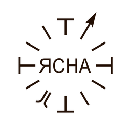
Ясна-Школа
Русская Школа Русского Языка. Уроки РШРЯ, курсы и статьи о русском учении, мировоззрении и русской семье.
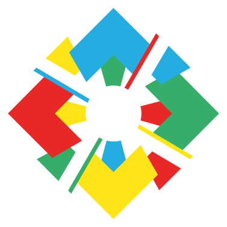
Воспитание и Образование
Родителям рассказываем, что такое воспитание, детям предлагаем образовательный курс. Четыре столпа: телосложение, обучение, образование, просвещение.
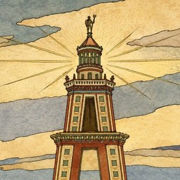
Александрия
Теоретическое ядро Ясны: изучаем построение раскладок — «разложи всё и соедини всё». От медицины до истории.
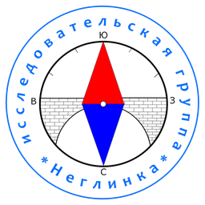
Неглинка
Проясняем историю и географию России — гуляем по Москве, читаем то, что зашифровано в улицах.
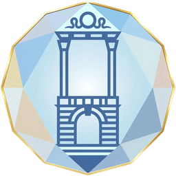
Граника
Читаем язык предков в камне — усадьбы, крепости, монастыри и храмовые комплексы. Русский классицизм и деревянное зодчество.
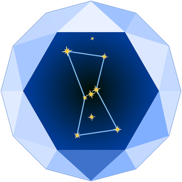
Астроневод
Астрономия наших предков: археоастрономия древних поселений, звёздный язык сказок и баллад, астрономия икон. Закон подобия — как на Небе, так и на Земле.

Ясные маршруты
Натурные уроки по городам: читаем устройство поселений через астрономию, географию, архитектуру и историю. Москва, Петербург, Кронштадт.
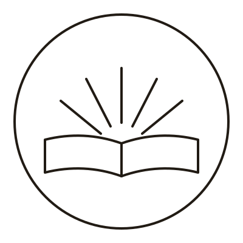
ЛитПроСвет
Литература как способ думать и чувствовать. Возвращаем людей к чтению — клубы, аудиолекторий, разборы классики.
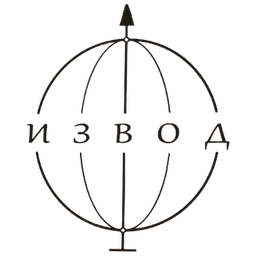
Извод
Устройство языка и изводы слов — тех, что сформировали смыслы русского мировоззрения. Фольклор, история, истинные смыслы фразеологизмов.
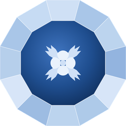
Джива
Здоровье и тело в русской традиции. Дыхание, движение, голос, уклад — практики возвращения к себе.
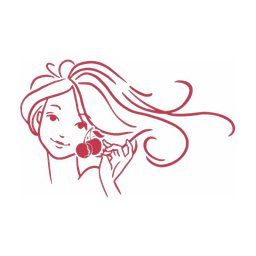
Парад Красоты
Красота, лад и любовь как уклад жизни. Эстетика русской традиции — от образа до отношений между людьми.
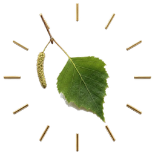
Herbaldika
Родовые знаки, гербы и символика. Читаем язык образов — что и зачем зашифровано в гербах городов и родов.
Четыре пути
Ясну исследуют по-разному — пути можно совмещать и менять.
Войти в управление
Работать в команде управления — вместе разбирать, ходить, исследовать.
Выбрать управление →Прийти со своим проектом
Принесите свою разработку или проект — управление посмотрит. Авторство остаётся за вами.
Рассказать о проекте →Учиться
Групповые занятия и разборы — или индивидуально, если хочется в своём темпе. Начать можно без подготовки.
Спросить про занятия →Просто быть рядом
Общие праздники, творческие вечера, живое общение. Без обязательств — приходите и смотрите.
Ближайший сбор →Как живёт Ясна
Встречаемся, исследуем, применяем в своей жизни.
Москва, Петербург, онлайн
Раз в 1–2 недели.
Возвращаемся к своему укладу
Речь, семья, дом, здоровье.
Вчерашние участники
Ступеней нет: кто пришёл раньше — помогает.
Большой лист
Общий сбор. Между сборами — Купала, Осенины, Святки, поездки.
Четыре опоры. Один круг.
Взаимная ответственность: на этой конструкции держится и семья, и страна. Так мы разбираем привычные вещи на занятиях.
Государство
Отец
Дети
Мать
Если разорвать одно звено — рушится весь круг.
Частые вопросы
Золотой Ясень — интеграционный центр: двенадцать управлений, у каждого свой руководитель; ступеней и обязательных взносов нет. Вы подписываетесь на каналы управлений, участвуете в обсуждениях и встречах в удобном ритме. Можете прийти на открытую встречу, посмотреть материалы и решить, подходит ли вам формат. Все публикации доступны бесплатно.
Подписка на каналы и открытые встречи — бесплатно. Отдельные прогулки и курсы бывают платными — цена стоит в анонсе.
Никаких формальных. Приходите и уходите свободно, формат участия выбираете сами. В разборах опираемся на первоисточники и проверяем выводы вместе.
Подпишитесь на Telegram-канал управления, тема которого вам ближе. Почитайте материалы. Приходите на ближайшую открытую встречу. Или оставьте заявку — координатор свяжется и подскажет, что подойдёт лучше всего.
Да. Herbaldika работает онлайн, Извод совмещает московские встречи с онлайном. У Ясна-Школы всё онлайн, живые выступления бывают. ЛитПроСвет, Джива и Парад Красоты совмещают московские встречи с онлайном. У Неглинки, Граники и Александрии часть работы очная — Москва и Петербург, — а разборы и лекции идут онлайн, участвовать можно удалённо. Общий сбор 26 сентября — исключение: он проходит только очно, в Москве.
Столько, сколько хотите. Чтобы быть в курсе, хватает часа в неделю — почитать материалы и заглянуть в обсуждение. Ходить на все встречи необязательно.
Конечно, управления можно совмещать — они пересекаются. Неглинка рядом с Граникой: история города и архитектура. Извод рядом с ЛитПроСветом: язык и литература.
Мы исследуем вместе: каждый работает с первоисточниками, задаёт вопросы и приносит находки. Лекции и разборы тоже есть — собственную работу они не заменяют.
Сделайте первый шаг.
Поможем выбрать управление.
Оставьте заявку — координатор свяжется с вами в течение 2–3 дней и подскажет, с чего начать. Можно прийти на открытую встречу и просто посмотреть.